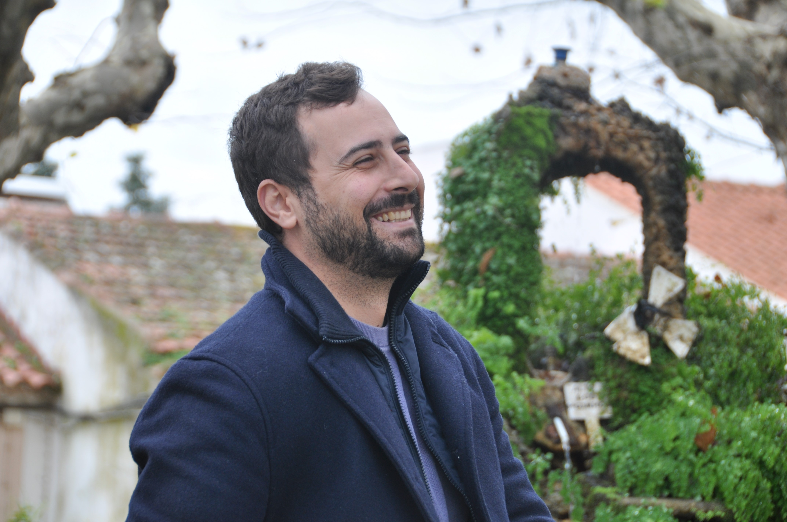
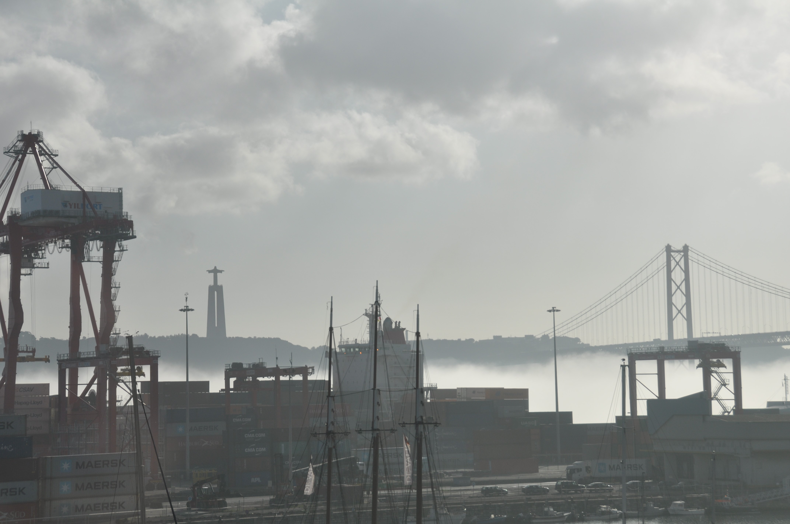

Trabalhos
Laboratório de Fotografia
Laboratório de Fotografia

Nesta unidade curricular, o objetivo foi explorar diferentes géneros fotográficos, aplicando e dominando os controlos manuais de uma câmara DSLR. O trabalho consistiu na produção de três fotografias distintas, focadas nos temas de retrato, paisagem e arquitetura.
Tecnologias Utilizadas
Para a realização deste projeto, foram utilizados os seguintes equipamentos e software:
- Câmara: Nikon D90.
- Sistema de Autofoco: Multi-CAM 1000 com 11 pontos de foco.
- ISO: 200-3200 (expansível para 100-6400).
- Acessórios: Tripé.
- Software: Adobe Lightroom Classic e Adobe Photoshop.

Processo e Desenvolvimento
O projeto foi desenvolvido em várias fases, desde o planeamento de cada fotografia até à sua edição final. Para cada um dos géneros, foi adotada uma abordagem técnica específica:
- Retrato: Foi realizado em estúdio com iluminação artificial, utilizando um esquema de iluminação Rembrandt para criar um efeito dramático, com uma fonte de luz principal e um refletor.
- Paisagem: A fotografia da costa alentejana foi tirada ao final da tarde, recorrendo a um tripé para garantir a máxima estabilidade. Foi usada uma longa exposição para suavizar o movimento da água e criar uma atmosfera serena.
- Arquitetura: Para a fotografia de arquitetura moderna, o foco esteve na composição com recurso a linhas-guia para direcionar o olhar. Na pós-produção, foram feitas correções de perspetiva para garantir que as linhas verticais ficassem direitas.
O fluxo de trabalho de pós-produção envolveu a seleção e organização no Adobe Lightroom, onde foram feitos os ajustes básicos de exposição e cor, seguido de retoques finais no Adobe Photoshop.

Resultado e Aprendizagens
O resultado deste laboratório foi um portfólio com três fotografias distintas, cada uma demonstrando a aplicação de técnicas específicas do género explorado. As principais aprendizagens foram:
- O domínio dos controlos manuais da câmara (ISO, Abertura e Velocidade do Obturador) para controlar totalmente o resultado final da imagem.
- A compreensão prática de esquemas de iluminação em estúdio e de técnicas de composição no terreno.
- A consolidação de um fluxo de trabalho de pós-produção digital, reconhecendo a importância da edição como uma ferramenta para complementar e refinar a visão fotográfica.
Resultado
O resultado deste laboratório foi um portfólio com três fotografias distintas, cada uma demonstrando a aplicação de técnicas específicas do género explorado. As principais aprendizagens foram:
- O domínio dos controlos manuais da câmara (ISO, Abertura e Velocidade do Obturador) para controlar totalmente o resultado final da imagem.
- A compreensão prática de esquemas de iluminação em estúdio e de técnicas de composição no terreno.
- A consolidação de um fluxo de trabalho de pós-produção digital, reconhecendo a importância da edição como uma ferramenta para complementar e refinar a visão fotográfica.